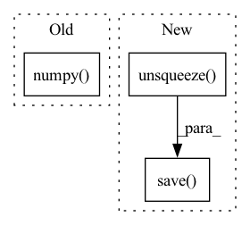

Pattern ID :22257

Before Change
mixture = torch.Tensor(signal).float()
mixture = mixture.unsqueeze(dim=0).unsqueeze(dim=0)
estimated_sources = model(mixture)
estimated_sources = estimated_sources.squeeze(dim=0).detach().cpu().numpy()
print("Finished separation...")
for idx, estimated_source in enumerate(estimated_sources):
After Change
save_path = os.path.join(save_dir, "mixture.wav")
mixture = torch.Tensor(signal).float()
torchaudio.save(save_path, mixture.unsqueeze(dim=0), sample_rate=sr)
// Separate by DNN
model = load_model(model_path)
model.eval()
In pattern: SUPERPATTERN
Frequency: 3
Non-data size: 3
Instances
Fragment ID: 70233272
Project Name: tky823/dnn-based_source_separation
Commit Name: 7d138d69e37624b9d23d9eb59b7a8e708fd52bf0
Time: 2021-05-29
Author: 40362510+tky823@users.noreply.github.com
File Name: egs/tutorials/conv-tasnet/local/demo.py
M Class Name: AnonimousClass
N Class Name: AnonimousClass
M Method Name: process_offline(5)
N Method Name: process_offline(5)
M Parent Class:
N Parent Class:
M File Name: egs/tutorials/conv-tasnet/local/demo.py
N File Name: egs/tutorials/conv-tasnet/local/demo.py
M Start Line: 59
M End Line: 72
N Start Line: 60
N End Line: 79
'>
Before Change
mixture = torch.Tensor(signal).float()
mixture = mixture.unsqueeze(dim=0).unsqueeze(dim=0)
estimated_sources = model(mixture)
estimated_sources = estimated_sources.squeeze(dim=0).detach().cpu().numpy()
print("Finished separation...")
for idx, estimated_source in enumerate(estimated_sources):
After Change
save_path = os.path.join(save_dir, "mixture.wav")
mixture = torch.Tensor(signal).float()
torchaudio.save(save_path, mixture.unsqueeze(dim=0), sample_rate=sr)
// Separate by DNN
os.makedirs(save_dir, exist_ok=True)
'>
Fragment ID: 70233271
Project Name: tky823/dnn-based_source_separation
Commit Name: 7d138d69e37624b9d23d9eb59b7a8e708fd52bf0
Time: 2021-05-29
Author: 40362510+tky823@users.noreply.github.com
File Name: egs/tutorials/dprnn-tasnet/local/demo.py
M Class Name: AnonimousClass
N Class Name: AnonimousClass
M Method Name: process_offline(5)
N Method Name: process_offline(5)
M Parent Class:
N Parent Class:
M File Name: egs/tutorials/dprnn-tasnet/local/demo.py
N File Name: egs/tutorials/dprnn-tasnet/local/demo.py
M Start Line: 57
M End Line: 72
N Start Line: 55
N End Line: 79
'>
Before Change
real, imag = ratio * real, ratio * imag
estimated_sources = torch.cat([real, imag], dim=2)
estimated_sources = estimated_sources.squeeze(dim=0)
estimated_sources = istft(estimated_sources, T=T).numpy()
print("Finished separation...")
for idx, estimated_source in enumerate(estimated_sources):
After Change
save_path = os.path.join(save_dir, "mixture.wav")
mixture = torch.Tensor(signal).float()
torchaudio.save(save_path, mixture.unsqueeze(dim=0), sample_rate=sr)
// Separate by DNN
model = load_model(model_path)
model.eval()
'>
Fragment ID: 70233270
Project Name: tky823/dnn-based_source_separation
Commit Name: 7d138d69e37624b9d23d9eb59b7a8e708fd52bf0
Time: 2021-05-29
Author: 40362510+tky823@users.noreply.github.com
File Name: egs/tutorials/danet/local/demo.py
M Class Name: AnonimousClass
N Class Name: AnonimousClass
M Method Name: process_offline(6)
N Method Name: process_offline(6)
M Parent Class:
N Parent Class:
M File Name: egs/tutorials/danet/local/demo.py
N File Name: egs/tutorials/danet/local/demo.py
M Start Line: 65
M End Line: 99
N Start Line: 65
N End Line: 105